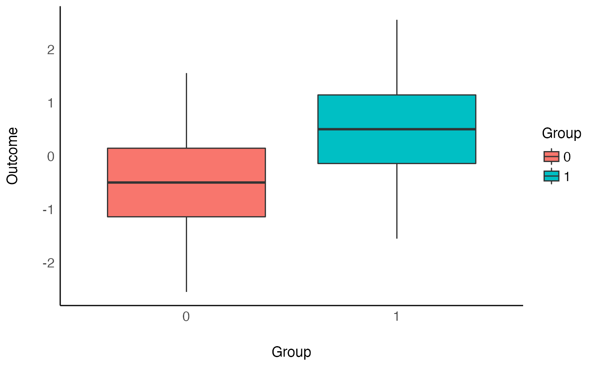
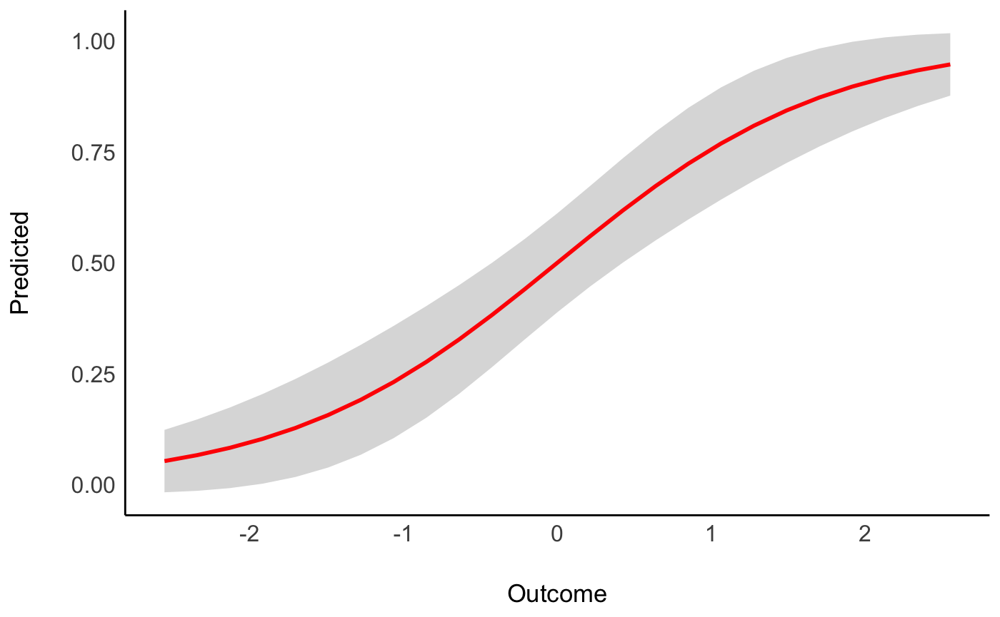
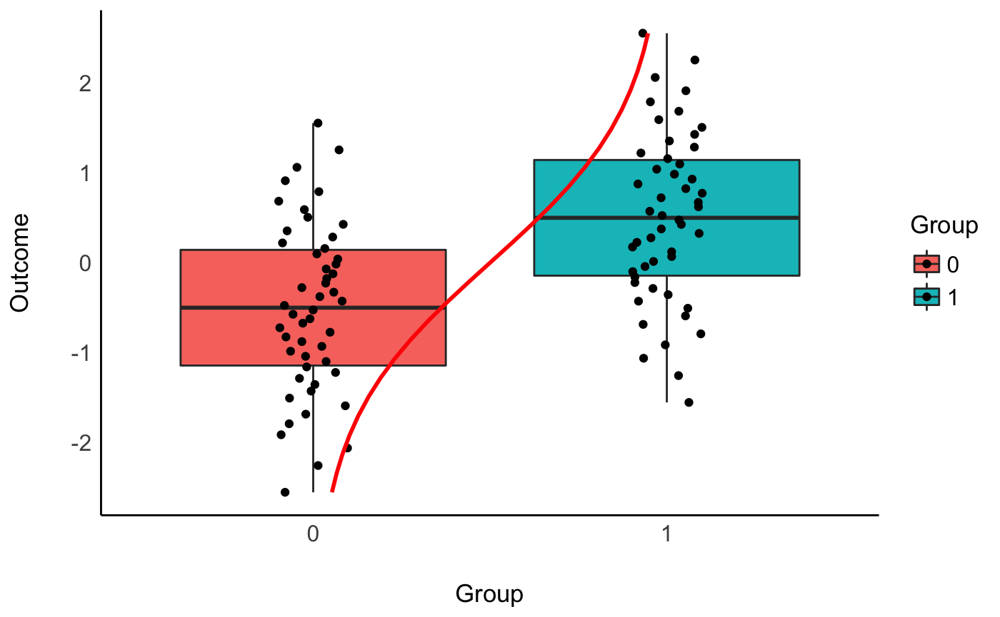

Let’s start off with a simple example. We will simulate 100 observations of a normally distributed outcome variable (mean = 0 and SD = 1) and a grouping variable made of zeros and ones. Importantly, the mean difference between these two groups (zeros vs. ones) is of 1.
data <- bayestestR::simulate_difference(n = 100, d = 1, names = c("Group", "Outcome")) summary(data)
> Group Outcome
> 0:50 Min. :-2.55
> 1:50 1st Qu.:-0.74
> Median : 0.00
> Mean : 0.00
> 3rd Qu.: 0.74
> Max. : 2.55Now, as we are interested in the difference between these two groups, we can first investigate it using a t-test.
library(ggplot2) ggplot(data, aes(x=Group, y=Outcome, fill=Group)) + geom_boxplot() + see::theme_modern()

ttest <- t.test(Outcome ~ Group, data=data, var.equal=TRUE) ttest_pars <- parameters::parameters(ttest) ttest_pars
> Parameter | Group | Mean_Group1 | Mean_Group2 | Difference | t | df | p | 95% CI | Method
> ----------------------------------------------------------------------------------------------------------------------
> Outcome | Group | -0.50 | 0.50 | 1.00 | -5.32 | 98 | < .001 | [-1.37, -0.63] | Two Sample t-testAs we can see, this confirms our simulation specifications, the difference is indeed of 1.
Let’s compute now, a traditional Cohen’s d using the effectsize package. While this d should be close to 1, it should theoretically be a tiny bit larger, because it takes into account the (pooled) SD of the whole variable x (across the groups), which because of the difference is a bit larger than 1.
sd(data$Outcome)
> [1] 1.1We can compute the Cohen’s d as follows:
effectsize::cohens_d(data$Outcome, data$Group)
> Cohen's d | 1e+02% CI
> --------------------------
> -1.06 | [-1.48, -0.64]As expected, it’s pretty close to 1 times the SD of the sample. Interestingly, one can estimate the Cohen’s d directly from the result of the t-test, using the t statistic. We can convert it to a d using the effectsize package:
effectsize::t_to_d(ttest_pars$t, df_error = ttest_pars$df)
> d | 1e+02% CI
> ----------------------
> -1.07 | [-1.50, -0.65]Fortunately, they are quite close.
Another way of investigating these differences is through the lens of a logistic regression. The main difference is that here, the group variable y becomes the outcome and x the predictor. Let’s fit such model and investigate the parameters:
model <- glm(Group ~ Outcome, data = data, family = "binomial") parameters::parameters(model)
> Parameter | Coefficient | SE | 95% CI | z | p
> --------------------------------------------------------------------
> (Intercept) | 1.23e-16 | 0.23 | [-0.45, 0.45] | 5.41e-16 | > .999
> Outcome | 1.13 | 0.27 | [ 0.65, 1.70] | 4.25 | < .001How to interpret this output? The coefficients of a logistic model are expressed in log-odds, which is a metric of probability. Using the modelbased package, one can easily visualize this model:
data_grid <- modelbased::estimate_link(model) ggplot(data_grid, aes(x = Outcome, y = Predicted)) + geom_ribbon(aes(ymin = CI_low, ymax = CI_high), alpha = 0.2) + geom_line(color = "red", size = 1) + see::theme_modern()

We can see that the probability of y being 1 (vs. 0) increases as x increases. This is another way of saying that there is a difference of x between the two groups of y. We can visualize all of our this together as follows:
ggplot(data, aes(x=Group, y=Outcome, fill=Group)) + geom_boxplot() + geom_jitter(width = 0.1) + # add vertical regression line geom_line(data = data_grid, aes(x = Predicted + 1, y = Outcome, fill = NA), color = "red", size = 1) + see::theme_modern()

You can notice that the red predicted probability line passes through x=0 when y=0.5. This means that when x=0, the probability of the two groups is equal: it is the “middle” of the difference between them.